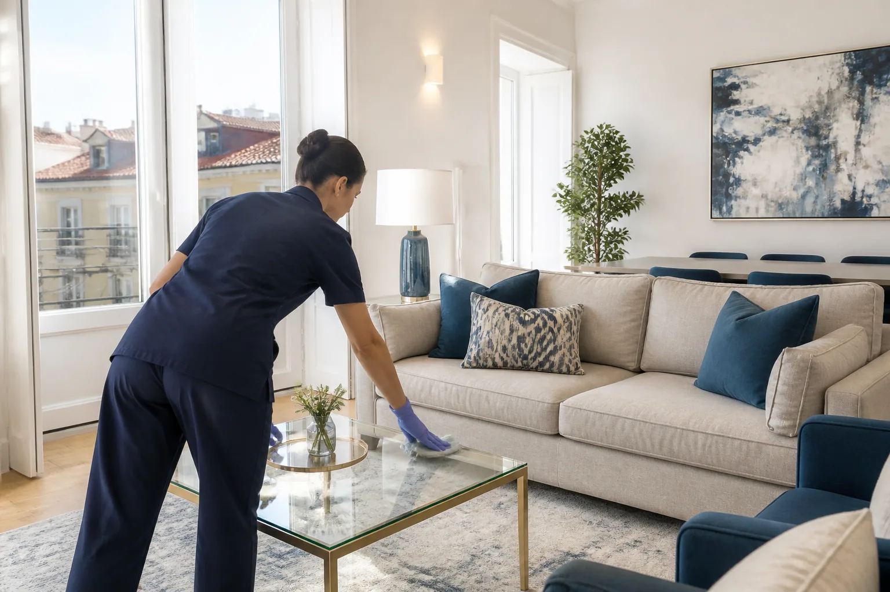

Empregada de Limpeza em Lisboa: Como Encontrar o Serviço Certo
Encontrar uma empregada de limpeza em Lisboa pode parecer simples, mas as necessidades variam muito de casa para casa. Há quem procure uma limpeza pontual, quem precise de apoio semanal e quem necessite de uma limpeza profunda ou pós-obra. Através da rede de parceiros FAZDETUDO.PT pode consultar profissionais disponíveis e contactá-los diretamente.
Encontrar uma empregada de limpeza em Lisboa pode parecer " "simples, mas as necessidades variam muito de casa para casa. Há quem procure " "uma limpeza pontual antes de entregar um apartamento, quem precise de ajuda " "semanal e quem necessite de uma limpeza profunda ou pós-obra.
Mais importante do que escolher apenas pelo preço é perceber que tipo de " "limpeza precisa, qual a frequência, que zonas devem ser tratadas e se o " "profissional trabalha na sua área.
Através da rede de parceiros FAZDETUDO.PT " "pode consultar profissionais de " "limpeza disponíveis e contactá-los diretamente. A FAZDETUDO.PT não executa " "estes serviços de limpeza — apresenta profissionais independentes da rede.

Que serviços pode fazer uma empregada de limpeza?
Uma limpeza doméstica pode cobrir a manutenção do dia a dia " "ou uma intervenção mais completa, conforme o que for combinado. Em muitos " "pedidos na Grande Lisboa, o serviço inclui:
- limpeza regular de casas, apartamentos e moradias;
- cozinhas, casas de banho, quartos e salas;
- remoção de pó, aspiração e lavagem de pavimentos;
- vidros acessíveis, quando combinado;
- organização ligeira, apenas se previamente acordada.
Nem todos os pedidos incluem os mesmos trabalhos. Por isso, convém confirmar " "com a profissional o que está incluído antes de marcar a visita — " "especialmente se precisar de armários interiores, varandas, roupa ou outras " "tarefas específicas.
Limpeza regular ou limpeza profunda: qual escolher?
A limpeza regular serve sobretudo para manter a casa " "apresentável com frequência: pó, chão, casas de banho, cozinha e zonas de uso " "diário. É a opção mais comum para quem quer apoio semanal ou quinzenal.
A limpeza profunda vai mais longe. Costuma incluir zonas " "menos tratadas no dia a dia, com maior acumulação de sujidade: rodapés, " "cantos, superfícies detalhadas, cozinha e casas de banho com mais atenção, " "e outras áreas que uma manutenção rápida normalmente não cobre.
Se a casa está razoavelmente cuidada e precisa de continuidade, a limpeza " "regular costuma chegar. Se há acumulação, mudança de casa ou muito tempo " "sem limpeza completa, uma limpeza profunda pode ser o ponto de partida " "antes de entrar num ritmo regular.
Limpeza pós-obra
A limpeza pós-obra é diferente de uma limpeza doméstica " "normal. Depois de pinturas, remodelações ou pequenas obras, é comum " "encontrar pó fino, resíduos, marcas em superfícies, vidros e pavimentos " "que exigem mais tempo e outro tipo de abordagem.
Pode envolver limpeza de pó, remoção de resíduos leves, tratamento de " "vidros, pavimentos, armários e outras superfícies — sempre conforme o " "estado do imóvel e o que for combinado com a profissional.
Não se trata, tipicamente, de remoção de resíduos de construção " "especializados ou trabalhos técnicos fora do âmbito de limpeza. Se a " "obra deixou entulho volumoso ou materiais perigosos, isso deve ser " "esclarecido à parte.
Quanto tempo demora uma limpeza?
Não existe um tempo único para todas as casas. A duração depende de " "vários fatores:
- dimensão do imóvel e número de divisões;
- estado geral da casa;
- tipo de limpeza (regular, profunda ou pós-obra);
- frequência pretendida;
- existência de animais;
- vidros, cozinha e casas de banho com mais detalhe.
Um conselho útil: envie fotografias e explique previamente o que " "pretende. Isso ajuda a profissional a avaliar melhor o trabalho e a " "disponibilidade antes de confirmar a visita.
O que perguntar antes de contratar uma empregada de limpeza?
Antes de avançar, estas perguntas ajudam a evitar mal-entendidos:
- Em que zonas trabalha?
- Faz serviços pontuais ou regulares?
- Que trabalhos estão incluídos?
- Os produtos são fornecidos pelo cliente ou pela profissional?
- Quanto tempo estima para o serviço?
- Trabalha sozinha ou acompanhada?
- Tem disponibilidade no dia pretendido?
- Como é feito o pagamento?
As respostas variam de profissional para profissional. Confirme " "sempre diretamente consigo.
Empregada de limpeza na Grande Lisboa
Muitas famílias e senhorios na Grande Lisboa procuram " "apoio para limpeza de apartamentos e moradias, sobretudo em zonas como " "Lisboa, Oeiras, Cascais, Sintra, Amadora, Odivelas ou Loures. As " "necessidades mudam: há quem queira manutenção semanal, quem prepare um " "imóvel para visita ou quem precise de limpeza após obras.
O mais importante é escolher uma profissional que trabalhe na sua " "área e que responda ao tipo de limpeza que realmente precisa. Na " "página de serviços de " "limpeza pode ver quem está disponível para contacto direto.
Limpezas na Margem Sul e Azeitão
Também existem profissionais parceiros que trabalham na " "Margem Sul, incluindo zonas como Almada, Seixal, " "Barreiro e Azeitão. A cobertura exata de cada profissional deve ser " "confirmada no contacto — a disponibilidade pode variar consoante o " "dia, a distância e o tipo de serviço.
Se vive na Margem Sul, indique a localidade logo no primeiro " "contacto. Isso acelera a resposta e evita deslocações desnecessárias.
Profissionais de limpeza disponíveis através da FAZDETUDO.PT
A FAZDETUDO.PT disponibiliza uma rede de parceiros independentes para serviços especializados. Nas limpezas, pode consultar os profissionais disponíveis e contactá-los diretamente.


Depois de falar com a profissional, pode também voltar à página de " "limpezas domésticas " "sempre que precisar de consultar novamente os contactos disponíveis.
Quanto custa uma empregada de limpeza em Lisboa?
O preço de um serviço de limpeza pode variar consoante a duração, " "dimensão do imóvel, frequência e tipo de trabalho. Uma limpeza " "regular de manutenção não tem as mesmas necessidades de uma limpeza " "profunda ou pós-obra.
Para receber uma indicação mais adequada, explique à profissional " "quantas divisões existem, que tipo de limpeza pretende e, quando " "possível, envie fotografias.
Limpeza semanal, quinzenal ou pontual?
Semanal: adequada para quem quer manutenção " "contínua da casa, com menos acumulação entre visitas.
Quinzenal: útil para casas que precisam de apoio " "regular, mas com menor frequência.
Pontual: frequente em mudanças, visitas, " "preparação de imóvel, limpeza profunda, Airbnb ou entrada e saída " "de inquilinos.
Se gere um alojamento ou recebe hóspedes com regularidade, a " "limpeza pontual entre estadias pode ser tão importante como a " "manutenção semanal de uma habitação própria.
Limpeza para Airbnb e Alojamento Local
Nos alojamentos locais, o tempo entre hóspedes é curto e a " "apresentação do imóvel conta. Em muitos casos, o foco está nas " "casas de banho, na cozinha e no aspeto geral da casa.
Trabalhos como tratamento de roupa ou reposição de consumíveis " "só devem ser considerados se forem previamente acordados. Confirme " "diretamente com a profissional quais os serviços disponíveis para " "Airbnb ou Alojamento Local.
Para pequenas reparações, montagens e trabalhos de handyman, " "consulte também os serviços FAZDETUDO.PT. " "Assim separa claramente o contacto direto de handyman dos " "serviços de limpeza " "realizados por profissionais parceiros.
Perguntas frequentes
Como encontrar uma empregada de limpeza em Lisboa?
Defina o tipo de limpeza (regular, profunda ou pós-obra), a frequência e a zona. Depois consulte os profissionais disponíveis na página de Limpezas da FAZDETUDO.PT e contacte diretamente a profissional que melhor corresponde ao que precisa.
Posso contratar apenas uma limpeza pontual?
Sim. Muitos pedidos são pontuais — por exemplo, antes de uma visita, numa mudança ou após obras. Confirme sempre a disponibilidade e o âmbito do serviço com a profissional.
Há profissionais para limpeza pós-obra?
Pode existir disponibilidade para limpeza pós-obra, mas o trabalho depende do estado do imóvel e do que for combinado. Explique o contexto e envie fotografias para uma avaliação mais clara.
Posso pedir limpeza semanal?
Sim, a limpeza semanal é uma das opções mais procuradas para manutenção contínua. A disponibilidade deve ser confirmada diretamente com a profissional.
A FAZDETUDO.PT realiza diretamente o serviço de limpeza?
Não. Os serviços de limpeza apresentados nesta página são realizados por profissionais parceiros independentes da rede FAZDETUDO.PT, que pode contactar diretamente.
Como contactar uma profissional?
Na página de Limpezas pode consultar os profissionais disponíveis e utilizar diretamente os botões de telefone ou WhatsApp.